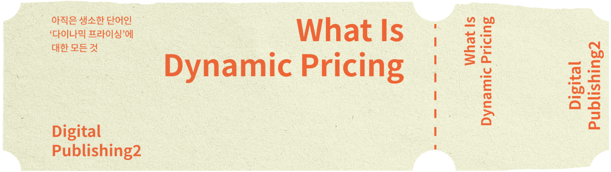

Dynamic Pricing
동적 가격(Dynamic Pricing)은 실시간으로 변화하는 시장 상황에 맞춰 가격이
유동적으로 조정되는 가격 책정 방식이다. 소비자 수요, 재고 상황, 이벤트 등 다양한 요인에
따라 가격이 변동되며, 전통적인 정가 판매 방식과 차별화된 점이 특징이다.
과거에는 실시간으로 수요를 파악하고 대처하는 것이 어려웠다. 그러나 인공지능(AI),
빅데이터(Big data), 클라우드(Cloud) 등 소위 ABC 기술이 발달하면서 다양한 업종이
동적 가격을 활용하고 있다. 공급자와 수요자의 정보 교환을 통해 변동된 가격으로
실시간 거래하는 것이 손쉬워졌다.

가격 인상 정보는 물론 인하 시기·범위·기준 등 모든 옵션을 명확하게 알려 다이나믹 프라이싱이 단순히 기업의
이익 증대를 위한 도구가 아니라 가격 혜택과 고객 경험 개선 등 소비자의 선택의 폭을 넓혀 주는
유용한 정책임을 이해시켜야 한다.
가격 상하한을 포함하여 변동폭이 과도하게 확대되지 않도록 알고리즘을 설정해야 하며,
특히 소비자의 선택권이 제한되는 비상사태나 위기 상황에서는 가격 급등을 차단할 수 있도록
신속한 개입이 필요하다. 숨겨진 수수료, 갑작스러운 가격 인상 등 비합리적인 가격 차별화 전략은
고객 이탈을 부르고 브랜드 평판을 떨어뜨릴 수 있다.